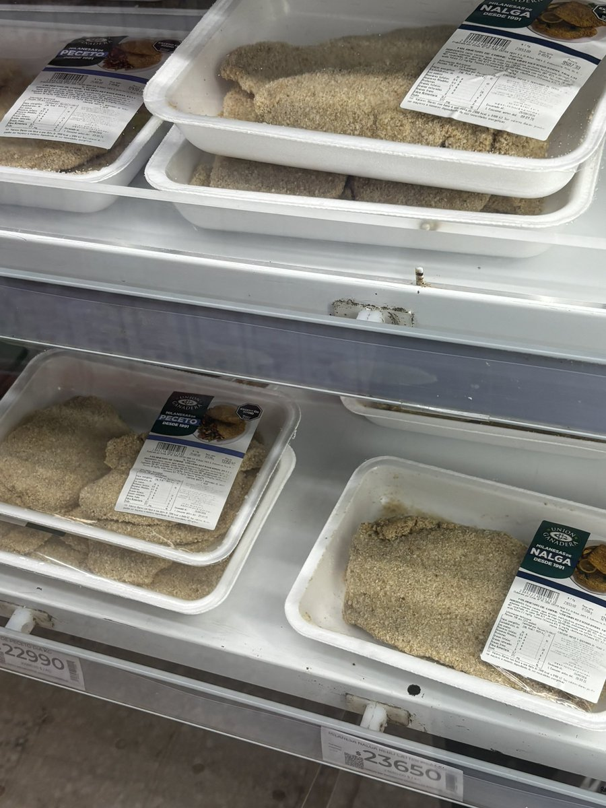
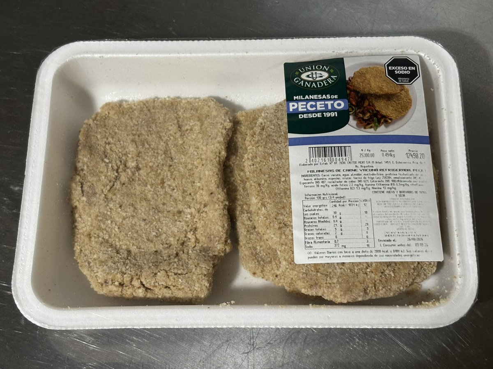
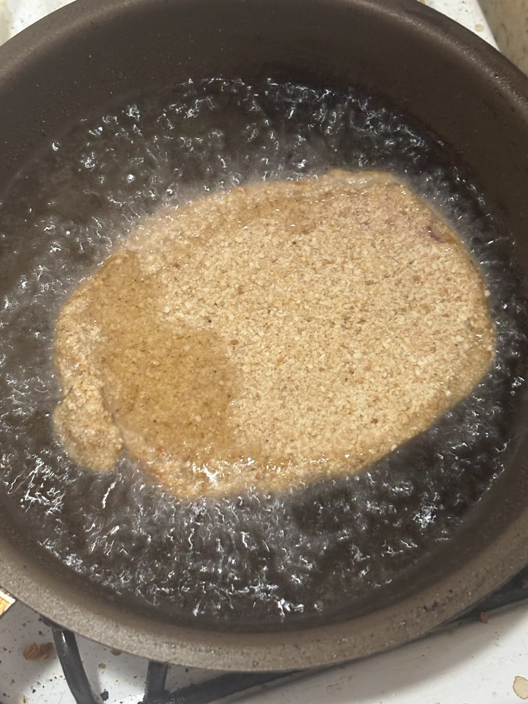
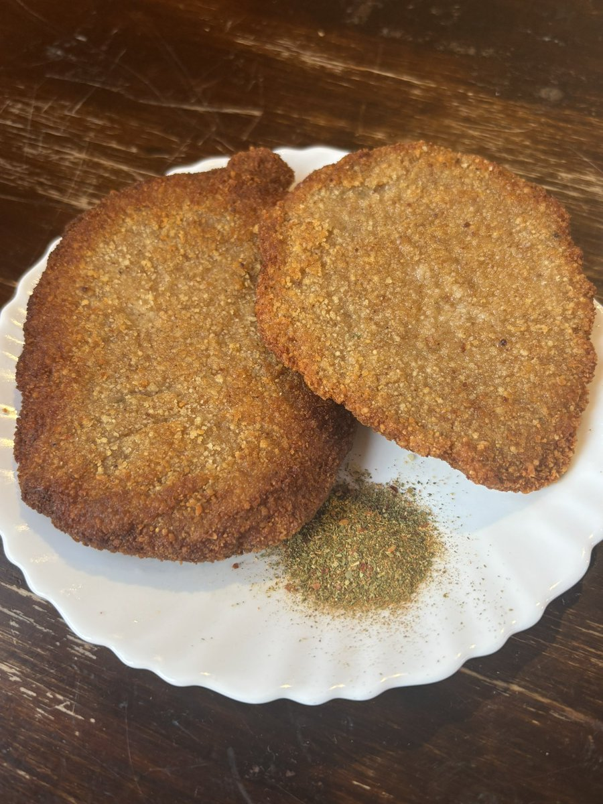

待到秋来九月八我花开后百花杀
@Ria8964kcw
@2091996981snow 大口吃肉




CABA下小雪
@2091996981snow
米兰萨（Milanesa）是阿根廷最经典的国民家常菜之一，源自欧洲的裹粉炸肉排传统，随着意大利移民传入南美。
做法是将牛肉或鸡肉切成薄片，蘸上加入盐、蒜和欧芹的蛋液，再裹上面包糠，用油煎炸至外皮金黄酥脆。
最常见的是牛肉米兰萨（Milanesa de https://t.co/tFNTZszyqy